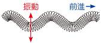
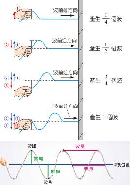
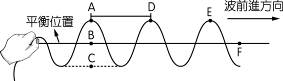
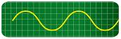
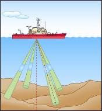

第 3 章 波動與聲音
3-1 波的傳播與特徵（一）
波與波動的產生及形式
重點 1 波與波動的產生
(1) 水、繩子或彈簧等物質，受到外來干擾影響時，所產生凹凸或疏密的部分稱為波；而波向前傳遞出去的現象則稱為波動。
(2) 造成物質擾動的來源稱為波源（或振源），傳遞波的媒介物質稱為介質。
(3) 依是否需要介質傳播分類：
• 力學波：需要介質傳播的波動（如水波、繩波、聲波）。
• 非力學波：不需要介質也能傳播的波動（如光波、無線電波、微波、X 射線）。
重點 2 波的形式（依介質振動方向分類）
| 波的種類 |
介質振動方向 vs 波前進方向 |
教材圖示與實例 |
橫波
(高低波) |
介質振動的方向與波前進的方向互相垂直 |

繩波、水波表面
|
縱波
(疏密波) |
介質振動的方向與波前進的方向互相平行 |
彈簧疏密波、空氣聲波
|
💡 波動傳播核心鐵律：波傳遞的快慢程度稱為波速。波只傳遞能量，不傳送介質！在同一種均勻介質中，波速為定值。介質質點僅在原處附近來回振動，絕不會隨波前進。
3-1 波的傳播與特徵（二）
週期波的特徵物理量與波速公式
重點 3 週期波的特徵物理量
• 週期波：連續且有規律性的波；振源振動一次形成全波。
• 波峰 / 波谷：波的最高點為波峰；波的最低點為波谷。
• 波長 ($\lambda$)：一個全波的長度，即相鄰兩波峰或兩波谷之間的水平距離。
• 振幅 ($A$)：平衡位置到波峰或到波谷的垂直距離。
• 週期 ($T$)：產生一個全波所需的時間（秒），與頻率互為倒數。
• 頻率 ($f$)：1 秒內產生的全波數目，單位為次／秒、赫茲 ($Hz$)。
• 核心公式：$T = \frac{1}{f}$ ； 波速 $v = \frac{\lambda}{T} = f \times \lambda$ （波速＝波長 $\times$ 頻率）

教材原檔解析：手搖產生週期波過程與各部位特徵名詞對照圖
3-1 隨堂實戰評量（一）
波動觀念與繩波特徵演練 (Q1~Q4)
(A) 縱波介質振動方向與波前進方向互相平行
(B) 橫波相鄰兩波峰的距離為波長
(C) 空氣中的聲音是一種縱波
(D) 橫波振動一次，介質移動兩個振幅（應為四個振幅）

（同條細繩波速定值，頻率增倍則波長減半）
(A) 振幅增加
(B) 波速增加
(C) 波自 B 傳到 F 的時間減少
(D) 波長變短
(A) 甲丙
(B) 乙丁
(C) 甲丁
(D) 乙丙
(A) 3 次／秒
(B) 10 次／秒
(C) 15 次／秒
(D) 30 次／秒
【解析】由 A 到 C 剛好產生 1 個完整全波，故花費時間即為週期 $T = 0.1\text{ 秒}$。頻率 $f = \frac{1}{T} = \frac{1}{0.1} = 10\text{ Hz}$（次／秒）。
3-1 隨堂實戰評量（二）
波速計算與波形坐標分析 (Q5~Q7)
(A) 360 公分／秒
(B) 120 公分／秒
(C) 40 公分／秒
(D) 6 公分／秒
【解析】頻率 $f = \frac{120\text{ 次}}{60\text{ 秒}} = 2\text{ Hz}$。波速 $v = f \times \lambda = 2\text{ Hz} \times 3\text{ cm} = 6\text{ cm/s}$。
(A) 甲、乙的波長比為 1 ： 2
(B) 甲、乙的週期比為 1 ： 2
(C) 甲、乙的振幅比為 1 ： 2
(D) 甲、乙的波速比為 1 ： 2（同介質波速應為 1：1）
(A) 甲向上，乙向下，丙向下
(B) 甲向下，乙向上，丙向上
(C) 甲向下，乙不動，丙向上
(D) 甲向上，乙不動，丙向下
【解題技巧】微位移法：波形向右微移少許畫出虛線，甲質點往下拉向虛線（向下），乙與丙質點往上拉向虛線（向上），故選 (B)。
3-2 聲音的形成與傳播
3-2 聲音的形成（一）
聲音產生條件與聲速影響因素
重點 1 聲音的產生條件
(1)
發聲條件：
a. 發聲體要迅速地振動。
b. 要有傳遞的介質，且不論氣體、液體或固體皆可傳遞。
(2)
聲音產生的生活實例：
• 說話或唱歌時所發出的聲音，是由於喉嚨聲帶振動所造成。
• 敲擊音叉，音叉振動發出嗡嗡聲；將敲擊後音叉接觸水面時，會激起水花。
• 手指撥動橡皮筋，橡皮筋因迅速振動而發出聲音。
重點 2 聲音的傳播與聲速特性
(1) 力學波本質：聲音是一種力學波，必須藉由介質才能傳遞出去，在真空中聲音無法傳播。
(2) 聲速決定因素：聲速的大小取決於介質的種類和狀態，與發音體本身的振動快慢或大小聲無關！
| 介質狀態與因素 |
傳播規律與原理 |
實例或計算公式 |
| 介質相態 |
一般而言：固 態 ＞ 液 態 ＞ 氣 態 |
鋼鐵(約 5000 m/s) ＞ 水(約 1500 m/s) ＞ 空氣(約 340 m/s) |
| 空氣溫度 |
溫度 $0^\circ\text{C}$ 時聲速為 $331\text{ m/s}$，每上升 $1^\circ\text{C}$ 聲速增加 $0.6\text{ m/s}$，氣溫愈高，聲速愈快。 |
公式：$v = 331 + 0.6 \times T$
（$15^\circ\text{C}$ 時聲速約 $340\text{ m/s}$） |
| 空氣濕度 |
濕度愈高，空氣平均密度較乾燥空氣小，聲速愈快。 |
雨天傳聲比乾燥晴天略快 |
💡 真空鈴聲實驗：將響鈴鬧鐘放入玻璃罩內，持續抽氣，鬧鈴聲逐漸變小至聽不見；若再將空氣重新注入，聲音又再度被聽見。這證實了聲音傳播一定要有介質，真空不能傳聲。
3-2 隨堂實戰評量（二）
經典試題即學即測 (Q1~Q6)
(A) 聲波的振動形式為橫波
(B) 發音體的週期增大，則聲音在空氣中的速度變大
(C) 聲波在空氣中的傳播速度大於其在水中的傳播速度
(D) 在氣溫 $30^\circ\text{C}$ 時，聲波在空氣中的速度大於其在氣溫 $10^\circ\text{C}$ 時的速度
(A) 聲波的傳遞過程一定要有介質
(B) 凡是物體發生振動，人耳一定可聽到聲音
(C) 講話講得愈快，聲速愈快
(D) 水上芭蕾舞者潛入水中時，無法聽到觀眾的掌聲
(A) 變快
(B) 變慢
(C) 不變
(D) 不一定
(A) 填入壓克力
(B) 塞入保麗龍
(C) 貼上具防爆隔熱性質的貼紙
(D) 抽成真空
(A) 340 公尺
(B) 1360 公尺
(C) 2720 公尺
(D) 5440 公尺
【解析】$15^\circ\text{C}$ 時聲速 $v = 331 + 0.6 \times 15 = 340\text{ m/s}$。光速極快瞬間即至，故距離 $S = v \times t = 340 \times 4 = 1360\text{ 公尺}$。
(A) 符合，爆炸能量極強，能藉由爆炸火光直接傳播聲音
(B) 符合，超聲波具有高度穿透性，能穿透真空傳播
(C) 不符合，太空中為真空狀態缺乏傳聲介質，無法傳遞聲音
(D) 不符合，聲波在真空中的傳播速率高達光速，不可能聽得見
3-3 多變的聲音（聲音三要素）
3-3 多變的聲音（一）
聲音三要素、示波器波形與噪音
重點 1 聲音三要素對照表
| 要素 |
音量（響度） |
音調 |
音色 |
示波器波形圖解 |
| 代表性質 |
聲音的大小 |
聲音的高低 |
聲音的特性 |
|
| 決定因素 |
振幅 |
頻率 |
波形 |
| 常用單位 |
分貝（dB） |
赫茲（Hz） |
×（無特定單位） |
| 控制特性 |
敲擊力愈大，聲音愈大，振幅愈大。 |
發音體愈短、細、緊、薄，振動頻率愈高，音調愈高。 |
不同發音體的獨特特性，由材料結構決定。 |
重點 2 各種樂器的獨特音色波形

音叉的波形（純正弦波）
長笛的波形
小號的波形
重點 3 樂音、噪音與分貝尺規
(1) 樂音：優美動聽、令人感到愉悅的聲音，其波形具有規律性。
(2) 噪音：吵雜刺耳、令人不舒服的聲音，其波形沒有規律性；若音量過大超過標準亦屬噪音。
3-3 隨堂實戰評量（一）
示波器波形與音量音調題型 (Q1~Q4)
(A) 音叉（上下振幅最高）
(B) 單簧管
(C) 鋼琴
(D) 一樣大
(A) 甲的聲音最快
(B) 乙的聲音最快
(C) 丙的聲音最快
(D) 三人的聲音一樣快（同一環境介質相同）
(A) 10 分貝
(B) 30 分貝
(C) 90 分貝
(D) 無法判斷
(A) 用較大的力打擊鼓面
(B) 用較小的力打擊鼓面
(C) 打擊靠近鼓面邊緣處
(D) 放鬆綁繩，使鼓面不繃得太緊
3-3 隨堂實戰評量（二）
音色、頻率與聽覺傳播分析 (Q5~Q8)
(A) 音調
(B) 音色（波形為個人獨特指紋）
(C) 響度
(D) 音速
(A) 波長由短而長
(B) 波速由小而大
(C) 振幅由小而大
(D) 頻率由小而大
(A) 將吉他弦線拉緊，撥弦時弦線每秒振動的次數會增加
(B) 唯有空氣中才能傳播聲波
(C) 聲音的高低稱為響度，通常以赫茲為單位
(D) 聲速超過 345 m/s 的聲波，稱為超聲波
(A) 波長
(B) 頻率
(C) 速度
(D) 振幅（能量向外擴散衰減）
3-4 聲波的傳播與應用
3-4 聲波的傳播與應用（一）
回聲規律與超聲波科技應用
重點 1 聲波反射與回聲現象
(1) 定義：波傳遞遇到障礙物返回原介質的現象稱為反射，反射回來的聲波稱為回聲。
(2)
反射前後物理量比較：
• 波速、頻率、週期、波長均不變（在同一介質傳播）。
• 振幅（響度）會減小（因能量被障礙物吸收與向外擴散）。
(3)
生活應用：
• 傳聲筒：可將聲波反射集中朝同一方向傳播，使遠方的人容易聽見。
• 聽診器：讓聲波在細管之間不斷反射，避免聲波散失及防止周圍聲音干擾。
重點 2 超聲波的定義與特性
(1) 人耳聽覺極限：人耳可聽到的聲音頻率範圍約為 20 ～ 20000 赫茲 ($Hz$) 之間。
(2) 超聲波定義：頻率超過 20000 赫茲，人耳無法聽到的聲音，稱為超聲波。
重點 3 超聲波的科技與生物應用
• 聲納 (Sonar)：在船艦中可利用聲納測量海底地形或魚群距離。
• 清洗：超聲波清洗機可以振動水以清潔物品（如眼鏡、首飾）。
• 醫療：孕婦產檢時會以超聲波來檢查胎兒的發育狀態。
• 動物生態：海豚、蝙蝠藉由發出及接收超聲波與同類溝通、辨別方向和覓食。

原檔教材：聲納測深示意圖
💡 聲納測深核心公式：聲波由發射至接收經過「海面 $\rightarrow$ 海底 $\rightarrow$ 海面」來回雙程，求單程深度必須除以 2：$S = v \times \frac{t}{2}$。
3-4 隨堂實戰評量（二）
教材原檔試題即學即測 (Q1~Q6)
(A) 聲波可以不同介質來傳播
(B) 聲波是因為物體的振動而產生
(C) 聲波傳播時遇到障礙物而被反射
(D) 因不同頻率的聲波會有不同的前進方向
(A) 超聲波
(B) 人耳可聽見的聲音（頻率較低，週期 $T = 1/f$ 較大）
(C) 兩者一樣高
(D) 必須視傳聲介質而定
(A) 游泳池底所發出的鬧鈴聲
(B) 振動頻率為 10 赫茲的聲音（次聲波）
(C) 振動頻率為 10000 赫茲的聲音
(D) 向山谷吼叫的回聲
(A) 蝙蝠飛行
(B) 聲納探測魚群
(C) 婦產科醫生檢查胎兒
(D) 偶像演唱會的歌聲
(A) 600 赫茲
(B) 10 赫茲
(C) 300 赫茲
(D) 聽不到聲音（$f = 10\text{ Hz} < 20\text{ Hz}$）
【解析】頻率 $f = \frac{600\text{ 次}}{60\text{ 秒}} = 10\text{ Hz}$。人耳聽力頻率範圍為 $20 \sim 20000\text{ Hz}$，$10\text{ Hz}$ 低於人耳下限，故聽不到。
(A) 600 公尺
(B) 960 公尺
(C) 1200 公尺
(D) 2400 公尺
【解析】超聲波為來回雙程，單程海深需除以 2：$S = v \times \frac{t}{2} = 1500 \times \frac{1.6}{2} = 1500 \times 0.8 = 1200\text{ 公尺}$。
第 3 章 重點整理
第 3 章 核心知識架構與重點整理
依據教材原稿全面歸納
📌 3-1 波的傳播與特徵
1. 凹凸或疏密為波；傳遞現象為波動。
2. 橫波：前進方向與介質振動垂直。
縱波：前進方向與介質振動平行。
3. 連續規律的波稱為週期波。
4. 週期 $T = \frac{1}{f}$；波速 $v = \frac{\lambda}{T} = f \times \lambda$。
5. 平衡位置到波峰（谷）為振幅；兩波峰（谷）間為波長。
📌 3-2 聲音的形成
1. 聲音是由物體迅速振動所造成。
2. 聲音必須依靠介質才能傳遞出去（真空不傳聲）。
3. 傳播速度：固體 ＞ 液體 ＞ 氣體。
4. 氣溫公式：$v = 331 + 0.6 \times T$。
5. 大聲喊叫只增加振幅，不會讓聲速變快！
📌 3-3 多變的聲音
1. 音量（響度）：決定於振幅，單位分貝 (dB)。
2. 音調：決定於頻率，發音體短細緊薄音調高。
3. 音色：決定於波形，獨特發音特性。
4. 樂音波形具規律性；噪音波形無規律性。
5. 音調高（尖銳）不等於音量大，兩者獨立！
📌 3-4 聲波的傳播與應用
1. 遇到障礙物反射回來的聲波稱為回聲。
2. 反射前後：波速、頻率、波長不變，振幅減小。
3. 人耳聽力範圍：$20 \sim 20000\text{ Hz}$。
4. 頻率超過 $20000\text{ Hz}$ 稱為超聲波。
5. 聲納測深公式：$S = v \times \frac{t}{2}$。
考前重點精華與易錯陷阱提醒表
| 單元主題 |
核心必背觀念 |
考前易錯陷阱提防 |
| 3-1 波動特性 |
力學波需介質；波速 $v = f \times \lambda$；介質原地來回振動。 |
同一介質中波速固定，頻率加倍則波長減半，波速不變！ |
| 3-2 聲音傳播 |
聲音需介質（真空不傳聲）；聲速 固＞液＞氣；氣溫每升 $1^\circ\text{C}$ 聲速增 $0.6\text{ m/s}$。 |
大聲喊叫只增加振幅，絕不會讓聲音傳播得比較快！ |
| 3-3 聲音三要素 |
響度看振幅；音調看頻率（短細緊薄音調高）；音色看波形。 |
音調高（尖銳）不代表大聲，兩者完全獨立！ |
| 3-4 反射與超聲波 |
回聲波速頻率不變、振幅衰減；超聲波頻率 $>20000\text{ Hz}$。 |
聲納測距訊號為來回雙程，求單程距離務必除以 2！ |
第 3 章 波動與聲音
第 3 章 考前盤點與自我檢核
必備技能自我檢核與概念診斷
一、 核心概念自我檢核清單
| 檢核 |
能力指標與必備技能 |
精要回顧與自我提示 |
| ☐ |
能區分力學波與非力學波、橫波與縱波 |
力學波需介質；橫波垂直（繩波）、縱波平行（聲波）。 |
| ☐ |
能熟練運用波速公式 $v = f \times \lambda$ 進行計算 |
同介質波速定值；頻率 $f$ 與週期 $T$ 互為倒數。 |
| ☐ |
能理解聲音需介質，真空無法傳聲 |
太空中無法直接交談；鬧鐘抽真空實驗聲音消失。 |
| ☐ |
熟記聲速大小順序並熟練氣溫公式計算 |
固＞液＞氣；$v = 331 + 0.6 \times T$（$15^\circ\text{C}$ 時約 $340\text{ m/s}$）。 |
| ☐ |
精確指認聲音三要素的決定物理量 |
響度看振幅；音調看頻率；音色看波形。 |
| ☐ |
能判讀示波器波形並比較三要素大小 |
高度看振幅；疏密看頻率；曲線特徵看波形。 |
| ☐ |
知道回聲反射前後各物理量的變化 |
同一介質中波速、頻率、波長皆不變，僅振幅變小。 |
| ☐ |
熟練計算聲納測距題型（牢記除以 2） |
單程深度 $S = v \times t / 2$，來回時間需除以 2。 |
二、 易錯觀念診斷是非題（點擊顯答）
【解析】波只傳遞能量，不傳送介質，水分子僅在原處附近來回振動。
【解析】說話大聲只增加振幅（響度），聲速由介質狀態決定，兩者完全無關。
【解析】音調由頻率決定；大聲（響度）由振幅決定，兩者完全獨立。
【解析】介質相同則波速不變；波源沒變則頻率不變，波長亦不變，僅振幅衰減。
【解析】超聲波與一般聲音同在空氣介質中傳播，聲速完全相同（頻率高則波長短）。